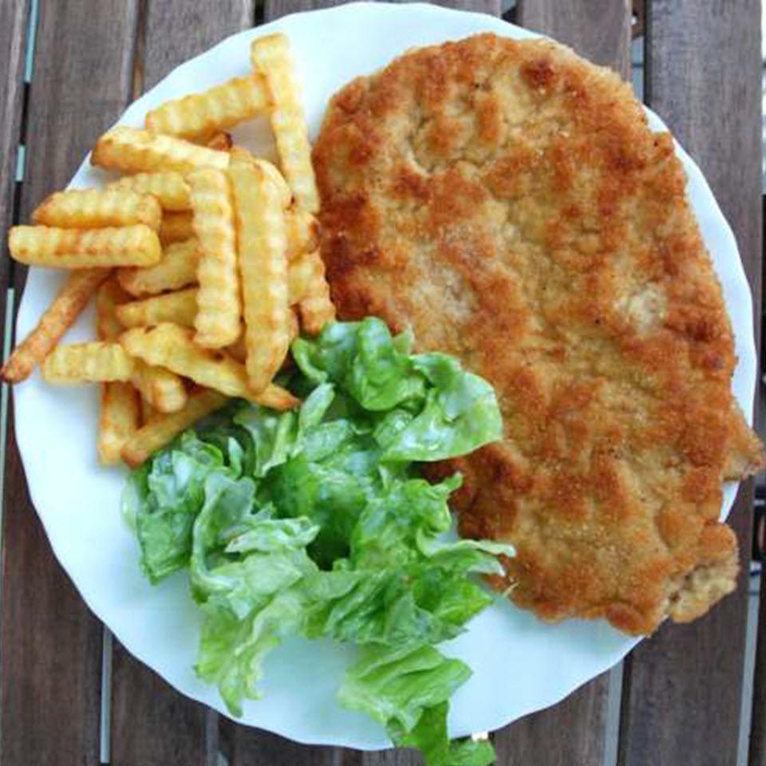

Description
Breaded pork chops with mashed potatoes and salad (preferably a sauerkraut salad) is served regularly for Sunday dinner in Poland. Pound the meat as thinly as you can for best results.
Ingredients
- 2 boneless pork chops
- salt and freshly ground black pepper to taste
- 1 tablespoon all-purpose flour
- 1 egg
- 5 tablespoons bread crumbs
- 2 tablespoons vegetable oil, or as needed
Steps
- Place pork chops between 2 sheets of heavy plastic on a solid, level surface. Firmly pound with the smooth side of a meat mallet, turning occasionally, until very thin. Season with salt and pepper
- Pour flour onto a large plate. Whisk egg in a wide, shallow bowl. Place breadcrumbs in a separate shallow bowl.
- Dredge chops with flour. Dip in whisked egg. Coat with bread crumbs on both sides. Shake off excess coating.
- Heat oil in a large skillet over medium-high heat. Add breaded chops; cook until golden brown, about 5 minutes per side.